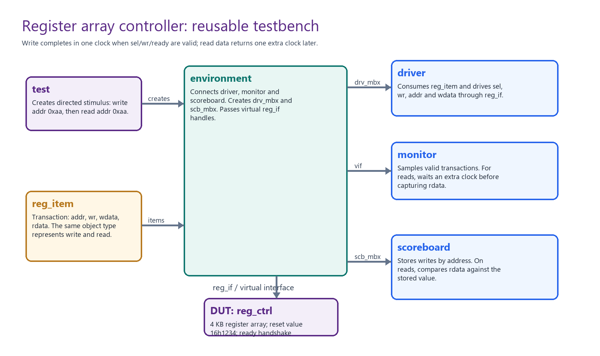
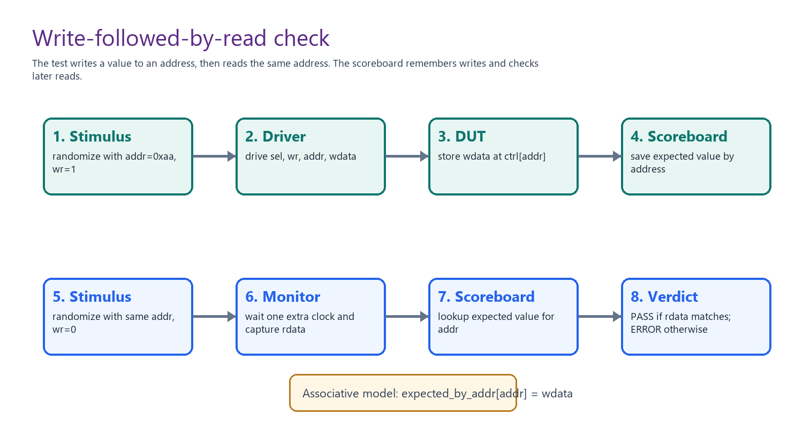
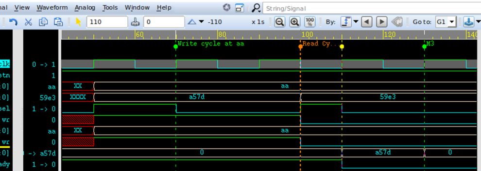

Ideia central
Este bloco continua a sequência de reference designs, mas agora o DUT não é apenas combinacional. O exemplo usa um controlador de array de registradores. Isso muda o tipo de raciocínio: o ambiente precisa lidar com endereço, escrita, leitura, valor armazenado, reset, latência e protocolo de aceitação.
A pergunta principal deixa de ser "qual é a saída para esta entrada?" e passa a ser: como verificar um bloco que guarda estado e responde em ciclos diferentes?

O DUT: register array controller
O DUT é uma pequena estrutura endereçável. Pelos parâmetros do slide e do código do lab, ele tem
ADDR_WIDTH = 8, DATA_WIDTH = 16, DEPTH = 256 e
RESET_VAL = 16'h1234.
parameter ADDR_WIDTH = 8;
parameter DATA_WIDTH = 16;
parameter DEPTH = 256;
parameter RESET_VAL = 16'h1234;
reg [DATA_WIDTH-1:0] ctrl [DEPTH];
Isso cria 256 posições de 16 bits. O slide chama o exemplo de "4 KB register array controller".
Pelo produto 256 x 16, o armazenamento bruto é 4096 bits, ou 4 Kb em bits.
Essa precisão de unidade não muda a aula, mas é uma boa prática de engenharia.
Interface e transação
A interface agrupa os sinais reais do protocolo. O DUT a usa como porta, e as classes de verificação
a acessam por virtual interface.
interface reg_if (input bit tb_clk);
logic rstn;
logic [7:0] addr;
logic [15:0] wdata;
logic [15:0] rdata;
logic wr;
logic sel;
logic ready;
endinterface
A transação equivalente é reg_item. Ela representa uma operação abstrata no register array.
Para uma escrita, interessam addr, wdata e wr=1.
Para uma leitura, interessam addr, wr=0 e o rdata observado depois.
class reg_item;
rand bit [7:0] addr;
rand bit [15:0] wdata;
bit [15:0] rdata;
rand bit wr;
function void print(string tag="");
$display("T=%0t [%s] addr=0x%0h wr=%0d wdata=0x%0h rdata=0x%0h",
$time, tag, addr, wr, wdata, rdata);
endfunction
endclassrdata não é randomizado porque é resposta observada do DUT.
Randomizar resposta seria contaminar o teste com valor inventado.
Cenário write followed by read
O caso central do bloco escreve em um endereço e depois lê o mesmo endereço. Esse é o padrão básico de verificação de memória, registrador, FIFO e banco de registradores: criar estado interno conhecido e depois observar se ele volta corretamente.

addr=8'haa. Na leitura seguinte do mesmo endereço,
ele compara o rdata observado com o dado esperado.
item = new;
#50 item.randomize() with { addr == 8'haa; wr == 1; };
drv_mbx.put(item);
item = new();
#50 item.randomize() with { addr == 8'haa; wr == 0; };
drv_mbx.put(item);Isso é directed randomization: a transação ainda usa randomização, mas alguns campos são fixados por uma restrição local. Aqui o endereço e o tipo de operação são dirigidos; o dado de escrita pode continuar randomizado.
Driver e monitor
O driver é ativo. Ele pega uma transação da mailbox e dirige sinais na interface. O monitor é passivo. Ele observa os sinais da interface e reconstrói a transação que realmente aconteceu.
Driver
Transforma reg_item em sinais: sel, addr, wr e wdata.
Precisa respeitar ready para não aplicar operação fora do protocolo.
Monitor
Transforma sinais em reg_item observado.
Em leitura, espera um clock extra para capturar rdata.
forever begin
@(posedge vif.tb_clk);
if (vif.sel) begin
reg_item item = new;
item.addr = vif.addr;
item.wr = vif.wr;
item.wdata = vif.wdata;
if (!vif.wr) begin
@(posedge vif.tb_clk);
item.rdata = vif.rdata;
end
scb_mbx.put(item);
end
endEsse trecho do monitor é uma aula inteira em poucas linhas. Ele mostra que monitor não é simplesmente "tirar foto de sinais". Monitor interpreta protocolo. Se a leitura tem latência, a captura precisa respeitar a latência.
Scoreboard como modelo de referência
O scoreboard mantém um modelo esperado do array. Quando recebe uma escrita, guarda o dado por endereço.
Quando recebe uma leitura, consulta o endereço e compara com rdata.
write:
refq[addr] = item_escrito
read:
se refq[addr] não existe:
esperado = 16'h1234
senão:
esperado = refq[addr].wdata
comparar esperado com item.rdata
O caso de primeira leitura é especialmente importante: se um endereço nunca foi escrito depois do reset,
o valor esperado não é desconhecido; é RESET_VAL. Assim, o reset vira requisito verificável.
Environment
O environment monta o testbench: instancia driver, monitor, scoreboard, mailbox e distribui a interface virtual. Ele é a peça que deixa o ambiente organizado e reaproveitável.
class env;
driver d0;
monitor m0;
scoreboard s0;
mailbox scb_mbx;
virtual reg_if vif;
virtual task run();
d0.vif = vif;
m0.vif = vif;
m0.scb_mbx = scb_mbx;
s0.scb_mbx = scb_mbx;
fork
s0.run();
d0.run();
m0.run();
join_any
endtask
endclassEste exemplo ainda é manual, mas já tem a forma mental de UVM. O próximo bloco vai formalizar muitos desses papéis. Se você entende este environment, UVM deixa de parecer um conjunto de palavras mágicas.
VCS, Verdi, filelist e Makefile
O fluxo do slide é o fluxo clássico de duas etapas para SystemVerilog: compilar/elaborar e simular. Para debug, compila-se com acesso de debug e abre-se o FSDB no Verdi.
vcs -sverilog -f reg_array.f -debug_access -l comp.log
./simv -l reg_array.log
verdi -nologo -ssf reg_array.fsdb &
O arquivo reg_array.f é um filelist: ele guarda a lista de fontes que o VCS deve compilar.
O Makefile empacota esses comandos em alvos como make comp, make sim,
make debug e make clean.
Debug no Verdi
O slide de debug sugere investigar um bug em que ocorre escrita enquanto ready está baixo.
Esse é um erro de protocolo. Mesmo com endereço e dado corretos, a operação não deveria ser aceita se
o DUT não estava pronto.

sel, wr, addr,
wdata e ready ficaram válidos. O erro precisa ser analisado no tempo, não só no código.
Mini verification plan
Um plano simples para este DUT já mostra como a aula vira prática:
| Objetivo | Cenário | Resultado esperado |
|---|---|---|
| Reset | Ler endereço nunca escrito | rdata == 16'h1234 |
| Escrita/leitura básica | Escrever em 0xaa e ler 0xaa | Dado lido igual ao escrito |
| Múltiplos endereços | Escrever valores em endereços diferentes | Cada endereço preserva seu dado |
| Sobrescrita | Escrever duas vezes no mesmo endereço | Leitura retorna o último valor |
| Protocolo | Tentar operar com ready=0 | Operação não deve ser aceita |
| Bordas | Testar 0x00 e 0xff | Sem erro de índice |
Isso é o tipo de pensamento que ajuda tanto em prova quanto em laboratório: antes de escrever comandos, defina o que precisa ser observado e qual é o critério de aprovação.
Ponte com o ambiente do professor
Este bloco fortalece exatamente as técnicas que vamos usar no ambiente clonado: arquivo de lista de fontes, Makefile, top de simulação, virtual interface, driver, monitor, scoreboard, logs e Verdi.
A leitura prática é: vamos aplicar a mesma lógica ao seu lab. Primeiro localizar o DUT e o top, depois entender a interface, depois mapear como o Makefile compila e simula, depois adaptar ou criar testes, e por fim usar log/waveform/scoreboard para saber se está correto.